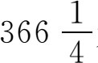

4．希腊文明的衰替
大约从公元的年代开始，希腊数学的活动能力逐渐衰退了。在这新时代里，托勒玫和丢番图的工作是唯一重要的贡献。帕普斯和普罗克洛斯这两大评注家是值得注意的，但他们只不过是写了这个时代最后的一页。这个文明曾在5个到6个世纪之间作出了远远超过其他文明那么多那么精彩的贡献，它的衰落需要人们来找出其原因。
不幸的是数学家也像最普通的农民一样要受历史条件的影响．只要稍稍懂得一点公元后亚历山大希腊人的政治历史，就能认识到不仅是数学而且所有文化活动都注定要遭灾殃。当亚历山大的希腊文明处于托勒玫王朝的统治下时，它是繁荣昌盛的。第一次灾殃是罗马人的来临，它们在数学史上的全部作用是一种破坏因素。
在论述罗马人对亚历山大希腊文明的冲击以前，先指出几件事实来说明罗马人的数学和罗马文明的性质。罗马的数学不值一提。罗马人活跃于历史舞台上的时期大约是从公元前750年到公元476年，差不多和希腊文明昌盛时期一样。而且（如以后就要讲到的）至少从公元前200年起罗马人就同希腊人有密切接触。但在这整个1100年之间没有出现过一个罗马数学家，所以除了少数细节外，这一事实本身就足以说明罗马数学史的整个情况了。
罗马人确有点粗浅的算术和一些近似的几何公式，其后又从亚历山大希腊人那里补充了一些知识。他们记整数的记号是大家熟悉的。为用整数进行计算，他们应用各种形式的算盘。此外他们也用手指和借助于特别编制的数表来计算。
罗马人分数的底是12。他们用特别的符号和文字来代表1/12，2/12，…，11/12，1/24，1/36，1/48，1/96，…之所以用12为底数，可能是从一年中的月数而来的。附带说起，他们的重量单位叫as；这as的十二分之一叫uncia，英文里的盎司（ounce，英两）和英寸（inch）都是从uncia一字演变而来的。
罗马人的算术和几何主要用在测量上，用于划定城市边界，以及住宅和庙宇的范围。测量人员只要用简单仪器和全等三角形的知识就可以算出他们所需要的大部分数量。
罗马人的确给我们改进了日历。到凯撒（公元前100—前44）时代为止，罗马的基本年有12个月共355天。每隔一年加上22天或23天的一个闰月，这样平均每年有

天。为改进这个日历，凯撒聘请了亚历山大的索西琴尼（Sosigenes），他建议定每年为365天并每四年有一闰年。凯撒所定的这个儒略历（从凯撒的名字Julius而来）是在公元前45年正式采用的。从公元前50年左右起罗马人编写他们自己的技术书籍，但其基本内容都取自希腊。这些技术书中最出名的是维脱鲁维关于建筑方面的十本书，大约撰写于公元前14年。这里的材料也是来自希腊的。颇为奇怪的是，维脱鲁维竟说数学上的三大发现是边长为3，4，5的直角三角形，单位长正方形对角线为无理量，以及阿基米德所解决的金冠问题。他确也提到另外一些数学方面的事实，如理想人体的各部分的比例，一些和谐的算术关系，以及关于算弩炮功效的算术方法。
“数学”一词在罗马人那里的名声是不好的，因为他们称占星术士为数学家，而占星术是罗马君王所严禁的。罗马王戴克里先（Diocletian，245—316）把几何区别于数学。前者是要学习并应用于公众事务的；但“数学方术”（意即占星术）则被视为不法而完全禁止。禁止占星术的罗马法律“数学和恶行禁典”在中世纪的欧洲仍被援用。但罗马皇帝和其后信奉基督教的罗马皇帝还是在宫廷里供养占星术士，以期万一他们的预言能够灵验。“数学家”与“几何学家”的区分一直到文艺复兴之后好久还保持着。甚至在17世纪和18世纪，人们用“几何学家”来称呼我们今日心目中的数学家。
罗马人是务实的，他们也夸耀他们的讲究实际。他们兴建起并完成了大量的工程项目——高架引水渠道，甚至一直存留到今天的宽广大路、桥梁、公共建筑以及大地测量——但若超出他们当前所急需的特定的具体应用，则任何别的思想是他们所摒弃的。罗马人对数学的态度可用西塞罗（Cicero）的话来表明：“希腊人对几何学家尊崇备至，所以他们的哪一项工作都没有像数学那样获得出色的进展。但我们把这项方术限定在对度量和计算有用的范围内。”
罗马君王并不像埃及的托勒玫朝诸王那样支持数学，而罗马人也并不懂得纯粹科学。他们竟然不想发展数学一事是令人惊讶的，因为他们统治了一个世界范围的帝国并且确乎需要解决一些实际问题。我们从罗马人的历史里所获得的教训是，凡鄙视数学家及科学家高度理论性工作并斥其为无用的人民，他们对重要实际成果如何产生是盲目无知的。
现在我们来考察罗马人在希腊政治和军事史上所起的作用。他们在稳占意大利中部和北部之后，接着就征服了南部意大利和西西里的希腊城市（前已提到，阿基米德在罗马人攻叙拉古时曾对该城的防守作出贡献，并为一罗马士兵所杀害）。公元前146年罗马人征服了希腊本土，他们又在公元前64年征服美索不达米亚。凯撒在托勒玫王朝的最后统治者克娄巴特拉（Cleopatra）女皇和她的兄弟间的内讧中进行干涉，设法在埃及获得插足之地。公元前47年，凯撒纵火焚毁停泊在亚历山大港的埃及舰队，大火延及该城，烧掉了图书馆。两个半世纪以来收集的藏书和50万份手稿这一古代文明的代表作竟被一扫而光。所幸的是藏书过挤的图书馆里有许多书容纳不下存放在塞拉皮斯（Serapis）神庙里，所以那些书免于被焚。此外，死于公元前133年的帕加蒙的阿塔卢斯（Attalus）三世曾把他的大量藏书留在罗马。安东尼（Mark Anthony）把这批藏书赠送给克娄巴特拉女皇，使神庙里又增添了这些图书。总的藏书量仍是很巨大的。
罗马人在公元前31年克娄巴特拉女皇去世时回到埃及并从此以后控制该处。他们热衷于扩张他们的政治势力，但并不热心传播他们的文化。被征服的地区成为殖民地，通过没收和征税榨取大量财富。由于大多数罗马君王是私欲之徒，他们把所控制的每个国家都搞得民穷财尽。一旦有人举起义旗，例如在亚历山大发生起义，罗马人就毫不犹豫地封锁饿死该地居民，并在镇压成功后屠戮成千人。
罗马帝国的后期历史也需要提一下。狄奥多西（Theodosius）王（379—395在位）把广大帝国划分给他的两个儿子，一个叫霍诺里乌斯（Honorius）的统治意大利和西欧，另一个叫阿卡狄奥斯（Arcadius）的统治希腊、埃及和近东。西部帝国在公元5世纪被哥特人所征服，这之后就是中世纪欧洲的历史。东部包括埃及（一度）、希腊以及今日土耳其的地方，它的独立一直保持到1453年被土耳其人征服时为止。由于东罗马帝国（又称拜占庭帝国）包括希腊本土，所以希腊文化和著作在某种程度上得以保存。
从数学史的观点说，基督教兴起所产生的后果是不幸的。虽然基督教领袖们采纳了希腊人和东方的许多无稽之谈和迷信习惯，以使基督教易于为新改宗的人所接受，但他们却反对异教徒的学问，嘲笑数学、天文和物理科学；基督徒是不许沾染希腊学术这个脏东西的。基督教虽然受到罗马人的残酷迫害，但它仍广为传播并且势力大到这种程度，使君士坦丁（Constantine）王（272—337）不得不奉它为罗马帝国的国教。从此以后基督徒就更有力量来摧毁希腊文化了。狄奥多西王禁止人民信奉异教，并在392年下令拆毁希腊神庙。许多希腊神庙被改成教堂，但其中仍多保留希腊的雕塑饰像。在整个帝国内异教徒受人袭击和屠杀。亚历山大时期著名女数学家希帕蒂娅（Hypatia，数学家泰奥恩的女儿）的命运标志着这一时代的终结。因为她不肯放弃希腊宗教，狂热的基督徒在亚历山大的街道上抓住了她，把她撕得粉碎。
希腊书籍成千本地被焚毁。在狄奥多西宣布取缔异教的那一年，基督徒焚毁了当时唯一尚存大量希腊图书的塞拉皮斯神庙。据估计有30万种手稿被焚。其他许多写在羊皮纸上的著作被基督徒洗刷掉用来写他们自己的著作。529年东罗马王贾斯蒂尼安封闭所有希腊哲学学校，包括柏拉图的学院在内。许多希腊学者离开东罗马，其中有些人如辛普利修斯迁居波斯。
新崛起的回教徒在640年征服埃及，给予亚历山大以最后的打击．残留的书籍被阿拉伯征服者奥马尔（Omar）下令焚毁，其理由是：“这些书的内容或者是可兰经里已有的，那样的话我们不需要读它们；或者它们的内容是违反可兰经的，那样的话我们不该去读它们。”因此在亚历山大的浴堂里接连有六个月用羊皮纸来烧水。
在回教徒攻占亚历山大之后，大部分学者迁居到当时的东罗马首都君士坦丁堡。虽然在拜占庭不友好的基督教气氛中不能按希腊思想的轨道充分活动，但学者及其著作汇集到一个比较安全的地方，却增加了800年后流传给欧洲的那个知识宝库。
揣测情况可能如何演变也许是件无聊的事情。但我们不得不指出，亚历山大时期的希腊文明是在其行将跨进现代文明之际中止了它活跃的科学生命的。它具有难得的理论与实践志趣上的结合，而这在其后1000年证明是多么富于成果。一直到它存在期间的最后几个世纪，它始终享有思想自由，这是文化能繁荣昌盛所不可或缺的条件。它在其后文艺复兴时代成为非常重要的几个领域里展开研究并作出了大的进展：定量的平面和立体几何、三角、代数、微积分和天文学。
常言道谋事在人而成事在天。对希腊人而言更准确的说法是天谋其事而人自弃之。希腊数学家被消灭了，但他们工作的成果终于传给了欧洲，至于怎样传法，且看下文所讲。
参考书目
Cajori，Florian：A History of Mathematics，Macmillan，1919，pp．63-68．
Gibbon，Edward：The Decline and Fall of the Roman Empire（many editions），Chaps．20，21，28，29，32，34．
Parsons，Edward Alexander：The Alexandrian Library，The Elsevier Press，1952．